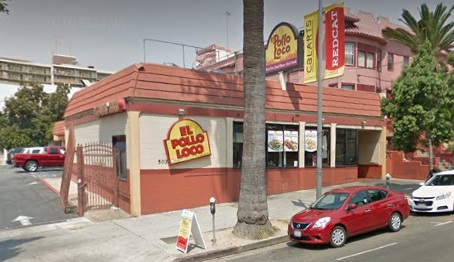
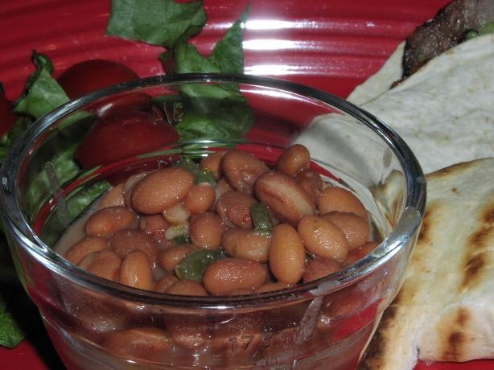

| Home | Pollo Loco | Burger King | Panda Express | Dominoes Pizza |
The Nearnest Pollo Loco: |
It is located at: |
|  | |
|
El Pollo Loco is one of the first restaurant that i went to eat chicken after i started eating chicken back in 2008.The Funny story about this restaurent is that when i went there to eat there for the first time i was little bit confused on what i should eat but thanks to the person at the counter i was able to have a greate meal and i really loved El Pollo Loco food. |
| Menu | ||
|---|---|---|
| 1 | Item | Price |
| 2 |
| My Favorites | ||
|---|---|---|
| 1 | Item | Price |
| 2 |
| Item - $prices | Item - $prices | Item - $prices |
|  |